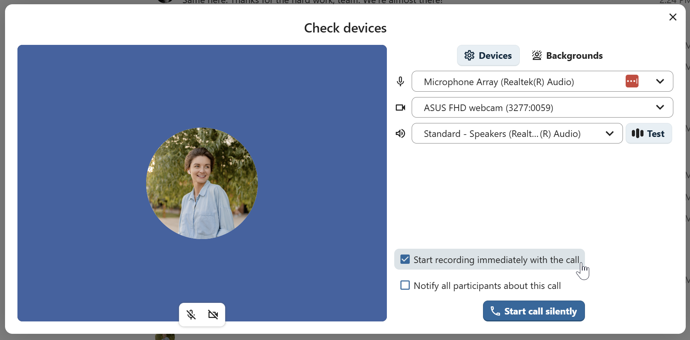
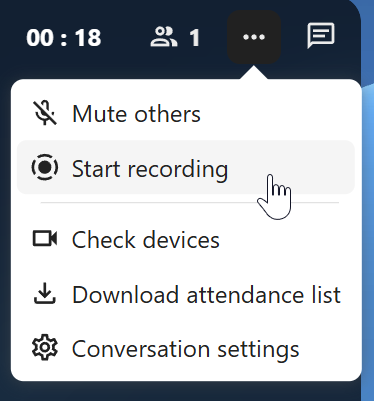
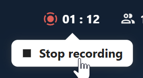
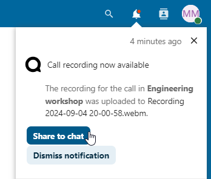
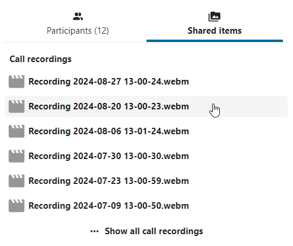
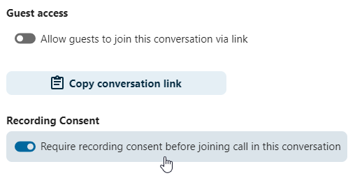
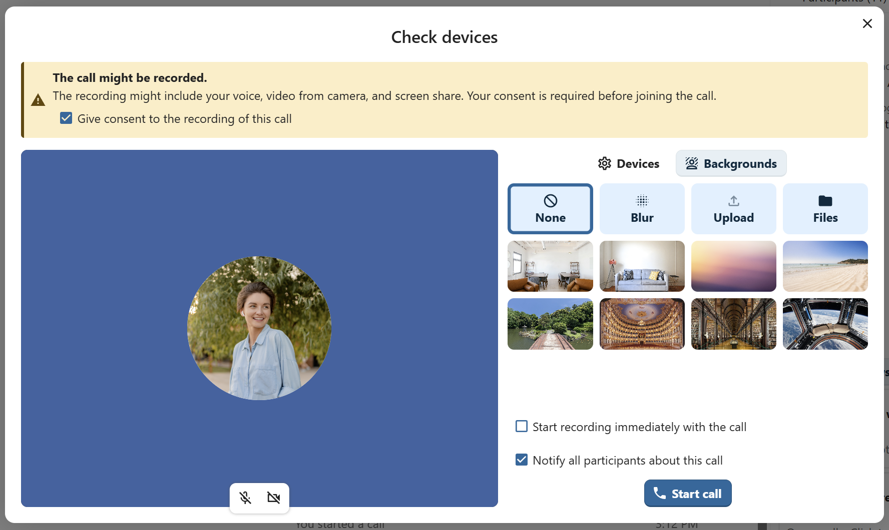

Înregistrarea apelurilor
Funcția de înregistrare îți permite:
să pornești și să oprești înregistrările în timpul unui apel;
să înregistrezi fluxul video și audio al vorbitorului, precum și partajarea ecranului;
să accesezi, să partajezi și să descarci fișierele înregistrate, pentru consultare ulterioară sau distribuire.
Pentru activarea acestei funcții, administratorul de sistem trebuie să configureze serverul de înregistrare.
Gestionarea unei înregistrări
Moderatorul conversației poate porni o înregistrare odată cu pornirea apelului sau oricând în timpul apelului:
Before the call: tick the checkbox „Start recording immediately with the call” in the „Check devices” dialog, then click on „Start call”.
În timpul apelului: deschide meniul din bara de sus și dă clic pe „Pornește înregistrarea”.




Înregistrarea va începe în scurt timp și vei vedea un indicator roșu lângă durata apelului. Poți opri înregistrarea oricând cât timp apelul este în desfășurare, dând clic pe acel indicator și selectând „Oprește înregistrarea” sau folosind aceeași acțiune din meniul din bara de sus. Dacă nu oprești manual înregistrarea, aceasta se va încheia automat la sfârșitul apelului.


După oprirea înregistrării, serverul are nevoie de câteva secunde pentru a pregăti și salva fișierul înregistrat. Moderatorul care a pornit înregistrarea primește o notificare când fișierul a fost încărcat. De acolo îl poate partaja în chat.




Consimțământul pentru înregistrare
Pentru conformitatea cu reglementările privind confidențialitatea, participanților li se poate cere consimțământul pentru înregistrare înainte de a intra în apel. Administratorii pot configura această funcție în mai multe moduri:
Poate dezactiva complet consimțământul.
Poate activa consimțământul obligatoriu la nivelul întregului sistem, pentru toate conversațiile.
Le poate permite moderatorilor să configureze această opțiune pentru fiecare conversație. În acest caz, moderatorii pot configura opțiunea din setările conversației:


If recording consent is enabled, every participant, including moderators, will see a highlighted section in the „Check devices” dialog before joining a call. This section informs participants that the call may be recorded. To give explicit consent for recording, participants must check the box. If they do not give consent, they will not be allowed to join the call.


După încheierea apelului, înregistrarea este procesată și salvată în chat ca fișier partajat. Participanții o pot reda direct din chat sau o pot descărca din elementele partajate ale conversației.